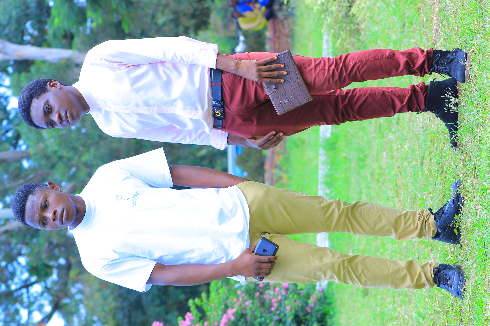

- Nom : MAWELE
- Post-nom : MOWOSO
- Prenom : Raphael
- Nationalité : Congolaise
- Sexe : Homme
- Etat civil : Celibataire
- Adresse : 30B, Av. sankuru Q/lisala C/kintambo
- Telephone : +243818436056
- Email : RaphaelMawele56@gmail.com

- 2012-2013 : Obtention du certificat de fin d'etudes primaires (TENAFEP).
Avec une mention excellente, j'ai achevé mes études primaires au complexe scolaire Bombenda, ecole primaire du territoite de Bomongo.
- 2018-2019 : Obtention du diplome d'Etat, baccalaureat scientifique (EXETAT).
J'ai ensuite poursuivi mes études sur le chemin de la science en choisissant la filière scientifique, option chimie-biologie. Puis, avec une satisfaisante mention, j'ai decroché mon diplome d'Etat (bac) à l'Institut Mungéta dans le territoire de Bomongo dans la province de l'équateur.
- 2019 à ce jour : Etude de licence informatique à l'Université de Kinshasa.
Mes études humanitaires achevés, j'ai choisis de poursuivre dans ma lancée en m'orientant dans le domaine informatique à l'Université de Kinshasa ou j'ai recemment passé ma première Licence en Mathematique, informatique & Statistique. Actuellement, je poursuis pour ma Licence 2 Informatique dans un systeme Licence Master Doctorat (LMD), toujours dans la faculté de Science et Technologies à l'Université de Kinshasa dans la commune de Lemba, en République Démocratique du Congo, ou je poursuis actuellement mon cursus académique.
- 2010-2011 Assistant commercial au magasin .
-2015-2018 DG à l'entreprise
- Microsoft Word ;
- Microsoft Excel ;
- Microsoft Power Point ;
- Latex ;
- HTML & CSS ;
A cette liste, nous pourrons notamment ajouter les differentes competences en cours d'apprentissage telsque le Web dans son ensemble, la programmation dans differents langages ainsi que les differentes connaissances que prosope ma filière.
- Français (Tres bon) ;
- Anglais (Moyen) ;
- Lingala (Tres Bon).